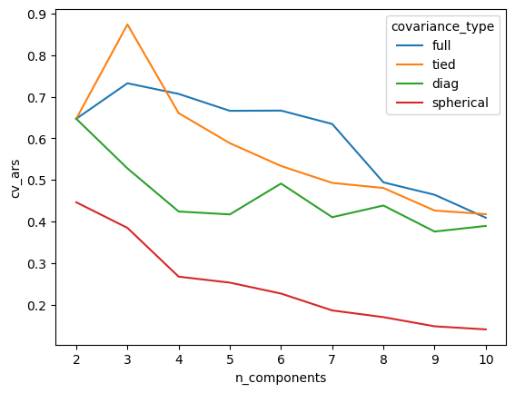

In this followup to my earlier post on modeling workflows in Python, I demonstrate how to integrate sample splitting, parallel processing, exception handling and caching into many-models workflows. I also discuss some differences between exploration/inference-centric workflows and tuning-centric workflows.
Motivating example
We will work with the Palmer Penguin dataset, which contains various biological measures on three species of penguins. Our goal will be to cluster the penguins into groups that correspond to their species using their bill length, bill depth, flipper length and body mass. We’ll use a Gaussian Mixture Model for clustering. Caveat: my goal here is to demonstrate a workflow, not good science.
We’ll start by pulling the data into Python and taking a look.
import pandas as pdpenguins = pd.read_csv('https://tinyurl.com/palmerpenguincsv').dropna()clustering_features = ['bill_length_mm','bill_depth_mm','flipper_length_mm','body_mass_g']penguins
species
island
bill_length_mm
bill_depth_mm
flipper_length_mm
body_mass_g
sex
year
0
Adelie
Torgersen
39.1
18.7
181.0
3750.0
male
2007
1
Adelie
Torgersen
39.5
17.4
186.0
3800.0
female
2007
2
Adelie
Torgersen
40.3
18.0
195.0
3250.0
female
2007
4
Adelie
Torgersen
36.7
19.3
193.0
3450.0
female
2007
5
Adelie
Torgersen
39.3
20.6
190.0
3650.0
male
2007
...
...
...
...
...
...
...
...
...
339
Chinstrap
Dream
55.8
19.8
207.0
4000.0
male
2009
340
Chinstrap
Dream
43.5
18.1
202.0
3400.0
female
2009
341
Chinstrap
Dream
49.6
18.2
193.0
3775.0
male
2009
342
Chinstrap
Dream
50.8
19.0
210.0
4100.0
male
2009
343
Chinstrap
Dream
50.2
18.7
198.0
3775.0
female
2009
333 rows × 8 columns
Our next step is to define a helper function to fit GMM estimators for us. I’m going to use sklearn’s GMM implementation, which uses the EM algorithm for estimation. The estimator has two key hyperparameters that we’ll want to explore:
n_components: the number of clusters to find
covariance_type: the assumed structure of the covariances of each cluster
Nothing in the code turns on these hyperparameters dramatically, but it probably worth reading the documentation linked above if haven’t seen GMMs before.
from typing import Listfrom sklearn.mixture import GaussianMixture# some comments:# # 1. I highly recommend using type hints, since it'll help you keep# keep track of what's happening in each column of the eventual# data frame of models## 2. Passing hyperparameters as keyword arguments is a generally usefu# pattern that make it easy to swap out estimators without having# to modify a lot of code that relies on estimators having# particular hyperparameters.## 3. Here I specify the columns of the data to use for modeling by# passing a list of column names. This is extremely limited and# will result in technical debt if you need to do any sort of # interesting work to build a design matrix. Alternatives here# might be a list of sklearn Transformers or a Patsy formula.# In R you would use a formula object or perhaps a recipe# from the recipes packages.#def fit_gmm( train : pd.DataFrame, features : List[chr],**hyperparameters) -> GaussianMixture:# the hyperparameters are: n_components: int, covariance_type: str gmm = GaussianMixture(**hyperparameters, n_init=5, random_state=27 ) gmm.fit(train[features])return gmm# sanity checkfit_gmm( penguins, features=clustering_features, n_components=3, covariance_type='full')
Now let’s build some infrastructure so that we can use sample splitting to evaluate how well our models perform out of sample. My approach below is heavily inspired by rsample. At the end of this post I have some longer commentary about this choice and why I haven’t used sklearn built-in resampling infrastructure.
import numpy as npclass VFoldCV:def__init__(self, data : pd.DataFrame, num_folds : int=10):self.data = dataself.num_folds = num_folds permuted_indices = np.random.permutation(len(data))self.indices = np.array_split(permuted_indices, num_folds)def__iter__(self):for test_indices inself.indices: test =self.data.iloc[test_indices] train =self.data[~self.data.index.isin(test_indices)]yield train, testresamples = VFoldCV(penguins, num_folds=5)for fold_index, (train, test) inenumerate(resamples):print(f""" In fold {fold_index} there are {len(train)} training observations and {len(test)} test observations """)
In fold 0 there are 269
training observations and 67 test observations
In fold 1 there are 269
training observations and 67 test observations
In fold 2 there are 268
training observations and 67 test observations
In fold 3 there are 267
training observations and 66 test observations
In fold 4 there are 270
training observations and 66 test observations
Now that we have cross validation folds, we want to create a grid of parameters to explore over. Here we leverage sklearn’s ParameterGrid object, which basically takes a Cartesian product that we can iterate over, as well as coerce to a data frame.
Now we are going to do something a little tricky. We are going to create a new column of model_grid that contains the results from fitting a GMM to each split from the CV object. In particular, each element in this column will itself be a list with num_folds elements. That is, we will create a list-column cv_fits were each element of model_grid.cv_fits is itself a list. To work with these structures it is easiest to define a helper function that fits a GMM to each CV split for a single combination of hyperparameters.
def fit_gmm_vfold( folds: VFoldCV, **hyperparameters) -> List[GaussianMixture]: fits = [ fit_gmm(train, **hyperparameters)for train, test in folds ]return fitsmodel_grid['cv_fits'] = [ fit_gmm_vfold( resamples, features=clustering_features,**hyperparameters )for hyperparameters in param_grid]model_grid.head()
covariance_type
n_components
cv_fits
0
full
2
[GaussianMixture(n_components=2, n_init=5, ran...
1
full
3
[GaussianMixture(n_components=3, n_init=5, ran...
2
full
4
[GaussianMixture(n_components=4, n_init=5, ran...
3
full
5
[GaussianMixture(n_components=5, n_init=5, ran...
4
full
6
[GaussianMixture(n_components=6, n_init=5, ran...
Note: To get our cross validated fits, we iterated over param_grid and stored results in model_grid. It’s essential that the row indices match up between these objects. Here they match by construction, but be careful if you start to play with this structure. For example, one alternative (and frequently convenient approach) here is to create a model_grid object based on itertools.product(param_grid, resamples) rather than just param_grid. This avoids nesting lists in list-columns, at the cost of inefficiency in terms of storage. This route is more fiddly than it looks.
Anyway, now that we have training fits, we want to compute out of sample performance estimates. In our case, we’ll use a measure of clustering quality known at the Adjusted Rand Score. Again we use nested list comprehensions to get out of sample estimates for all CV splits.
from sklearn.metrics import adjusted_rand_scoredef oos_vfold_ars( folds: VFoldCV, fits: List[GaussianMixture], features : List[chr]) -> List[float]: ars = [ adjusted_rand_score( test.species.astype('category').values.codes, fit.predict(test[features]) ) for (_, test), fit inzip(folds, fits) ]return arsmodel_grid['cv_ars'] = [ oos_vfold_ars( resamples, fits, features=clustering_features )for fits in model_grid.cv_fits]model_grid.head()
covariance_type
n_components
cv_fits
cv_ars
0
full
2
[GaussianMixture(n_components=2, n_init=5, ran...
[0.5773597889666247, 0.681909510769608, 0.7301...
1
full
3
[GaussianMixture(n_components=3, n_init=5, ran...
[0.7847295244771586, 0.6827179469291318, 0.892...
2
full
4
[GaussianMixture(n_components=4, n_init=5, ran...
[0.6156643872800062, 0.8044127524239013, 0.823...
3
full
5
[GaussianMixture(n_components=5, n_init=5, ran...
[0.5054853824225147, 0.6453882312873984, 0.632...
4
full
6
[GaussianMixture(n_components=6, n_init=5, ran...
[0.5568538569170978, 0.4055011787288985, 0.687...
Now we can compare models by expanding the cv_ars column and comparing out of sample performance measures. Here I’m just going to visualize the results, but you could also fit a mixed model of the form adjusted_rand_index ~ hyperparameter_combination + (1|cv_fold) or something along those lines if you want to be fancier.
It’s worth pausing a moment to comment on the cv_ars column. In my previous post, I introduced a helper function unnest() that you can use to expand a list-column that contains data frames. That unnest() function does not work with list-columns of lists, and instead we use the pandas.Series.explode() method, which is like an extremely limited version of tidyr::unnest(). Importantly, pandas.Series.explode() is not very clever about types, so you may need to coerce types after expanding list columns, as I do below.
import seaborn as snsimport matplotlib.pyplot as pltplot = sns.lineplot( data=cross_validated_ars.reset_index(), x='n_components', y='cv_ars', hue='covariance_type', ci=None)plt.show()

Higher Adjusted Rand Scores are better, so this initial pass of modeling suggests that we should use three clusters. This is reassuring, since we know there are three species of penguin in the dataset!
Note that I’m taking a very informal approach to model selection here and a real analysis should be more careful (in slightly more detail: the difference between CV for model selection and CV for risk estimation is germane here).
There are other approaches to model selection that we could take. For example, we could compare across hyperparameters with in-sample BIC, which is the approach taken in the R package mclust. We’ll do this briefly for illustrative purposes, and start incorporating some fancier tools along the way:
Parallelization (via joblib): Modeling fitting across hyperparameter is embarassingly parallel, so this will make things faster.
Exception handling (via a function decorator): In practice, lots of estimators will run into numerical or data issues that you can safely ignore. In particular, when model fitting fails, it’s okay fine to just return a np.nan (in R, an NA-like object) and use the results from whatever estimators did succeed, propagating the np.nan forward.
Caching (via joblib): In interactive workflows it’s easy to kill your Jupyter kernel or crash your computer or do something dumb that forces you to restart your Python session. It is really frustrating to have to refit your models everytime this happens. Caching models to disk (also known as memoization) prevents you from having to re-run all your models everytime you break Jupyter, etc, etc. If you use caching, you will have to be careful about cache invalidation, which is one of the most notoriously difficult problems in computing.
Full disclosure: I did not get parallelization and caching to work together for this post (bug report), but it has worked for me in the past. I’m going to include some commented out caching code in the following for you to play with as you see fit. See the joblibdocumentation for more examples of how to combine parallel mapping with caching.
from joblib import Parallel, delayed # parallelismfrom functools import wraps # nicer exception handlingfrom joblib import Memory # caching# setup cachingcache_dir ="./model_cache"memory = Memory(cache_dir, verbose=0)# NOTE: here `n_components` will exceed the number# of observations for some hyperparameter combinations# which will cause errors. here i'm artificially introducing# errors; in real life you'll have to supply your ownfancy_param_grid = ParameterGrid({'n_components': range(2, 400),'covariance_type': ['full', 'tied', 'diag', 'spherical']})fancy_model_grid = pd.DataFrame(fancy_param_grid)fancy_model_grid.tail()
covariance_type
n_components
1587
spherical
395
1588
spherical
396
1589
spherical
397
1590
spherical
398
1591
spherical
399
Now we define our function decorator for handling exceptions in list comprehensions. I’m basically copying purrr::safely() from R here. Exception handling is essential because it’s painful when you fit 9 out of 10 models using a list-comprehension, and then the final model fails and you have to re-run the first 9 models (caching also helps with this when you can get it to work).
def safely(func, otherwise=np.nan):# traditionally you'd use @wraps here,# but this seems to interact poorly with parallelism# for the time beingdef wrapper(*args, **kwargs):try:return func(*args, **kwargs)except:return otherwisereturn wrapper# if bad models become np.nan, downstream calls that use models# need to handle np.nan input. any easy way to do this is use# @safely again to just continue propagate np.nan@safelydef get_bic(fit):return fit.bic(penguins[clustering_features])fit_safely = safely(fit_gmm)# to combine parallelism and caching, use something like:# fit_cached = memory.cache(fit_safely)# create persistent pool of workers and use them for fittingwith Parallel(n_jobs=20) as parallel: fancy_model_grid['fit'] = parallel( delayed(fit_safely)(penguins, clustering_features, **hyperparameters)for hyperparameters in fancy_param_grid ) fancy_model_grid['bic'] = parallel( delayed(get_bic)(fit) for fit in fancy_model_grid.fit )
Now we can compare BIC across our absurdly large number of models. seaborn will automatically drop np.nan() values, so our @safely approach plays very nice here.
In this plot lower BIC is better. We see than this in-sample approach to model selection prefers models with as many clusters as observations. This would clearly correspond to overfitting in our case.
Returning to the big picture
At this point, you might be starting to wonderful why you would want to use a many-models workflow at all. All I’ve done in this blog post is some grid searching over hyperparameters, and we could easily recreate everything in this blog post with GridSearchCV and some custom scoring functions.
The problem is that GridSeachCV (and other related implementations) are not that flexible. Last summer, I had (1) custom data splitting, (2) custom estimators, and (3) wanted to compute high dimensional summaries for each model I fit. And I want to save my fits so that I could investigate them individually, rather than throwing them out as soon as I know about their predictive performance. GridSearchCV just can’t handle this, and, by and large, the data science ecosystem in Python doesn’t either.
We can imagine that there are two contrasting modeling workflows. First, there’s a many-models workflow, which is especially appropriate for research, inference and sensitivity analysis. It’s interactive, and not particularly focused on compute efficiency. Then, there’s a hyperparameter tuning workflow, which has a simple goal: predict well. Tools for tuning workflows are typically developed by machine learners who want to train models as computationally efficiently as possible. Because these practitioners emphasize prediction accuracy over all else, it can be hard to re-purpose tools for tuning workflows to learn about models beyond their predictive accuracy1.
Hopefully this post highlights some design patterns you can use when existing infrastructure isn’t a good fit for your Python modeling needs. I’m very curious to hear about other approaches people take this problem.
Footnotes
Aside about tidymodels: Early work in the tidymodels ecosystem focused on low level infrastructure that facilitated many-models workflows. I still use this infrastructure a lot, especially combined with targets, which is a make variant for R that plays nicely with modeling workflows, and tidymodels inspired much of the approach I took in the post above. However, current work in the tidymodels ecosystem focuses on high level infrastructure for tuning hyperparameters in predictive modeling scenarios. This mixture of general purpose low level infrastructure and more prediction specific high level infrastructure leads to some interesting discussions like this one, where someone asks how to use tidymodels to analyze designed experiments, which tidymodelsdoesn’t really provide any tools for.↩︎
![]()